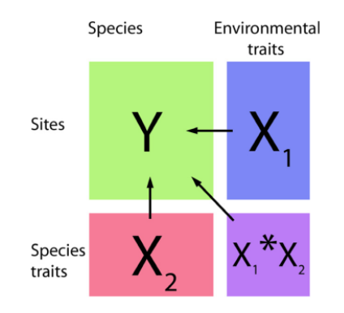

Chapter 9 26/01/2022
Metradica meeting
Presents:
- Ghislain
- Clément
- Sabrina
- Damien
- Jeanne
- Marion
Objectives:
1- les données 13C
2- les modèles joints
Notes:
L’estimation de l’efficience d’utilisation de l’eau intrinsèque peut être obtenue à l’aide de msures directes des échanges gazeux entre feuille et atm. Farquar 1982 propose un modèle simple reliant WUE (water use efficiency) à la discrimination isotopique du C au cours de la photosynthèse.
Relation WUE et \(\delta\) 13C positive.
Drivers de la compo iso:
- Lumière (feuille d’ombre valeurs 13C nettement plus négatives)
- génétique
- sécheresse atm + sol
- VPD
- teneur en mx du sol
- ontogénie de l’individu
- conductance hydraulique
Attention: la compo iso n’est pas un trait lié à la sécheresse. Il caractérise l’acclimation à la sécheresse. Il est utile pour une expé en serre de comparer le \(\delta\) 13C entre le groupe controle et le groupe dry. Une espèce sensible: on trouvera une forte différence vs. une espèce peu sensible, une faible différence. Et le delta ser aun trait de réponse à la sécheresse.
Travaux de Damien:
- 16 parcelles à travers la Guyane
- 9-10 sites
- ~100 arbres / parcelles
- ~1600 valeurs de compo iso de feuille d’arbres dominant
- 70 espèces différentes avec qq indet. par site; total de 392 espèces identifiées
- Moyenne valeur \(\delta\) 13C ~ -30 %0 pour les forêts en Guyane
- Lorsque le climat est le même, on observe le même fonctionnement
Avant nous procédions par espèces, le but des modèles joints: faire avec plusieurs espèces en même temps.Les modèles joints de distribution des espèces permettent d’estimer la niche des espèces, de prédire leur distribution, tout en prenant en compte les intéractions entre espèces. Ils peuvent être utilisés pour déterminer les communautés ou assemblages d’espèces et comment ces assemblages changent spatialement, selon des gradients environnementaux.
Prendre en compte: la co-occurence des espèces + relation trait-env’t pour déterminer la présence d’une espèce sur 1 site.

Modèle joint
Si l’on inclu les données 13C dans les modèles joints: on s’attend à une abscence de réponse.